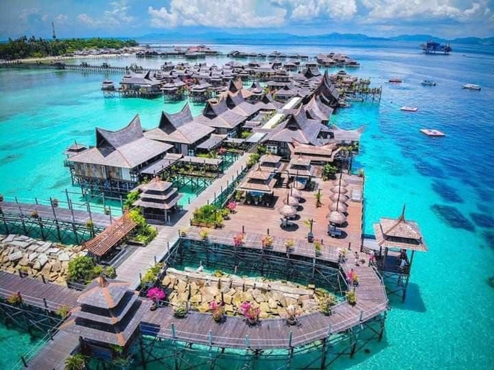
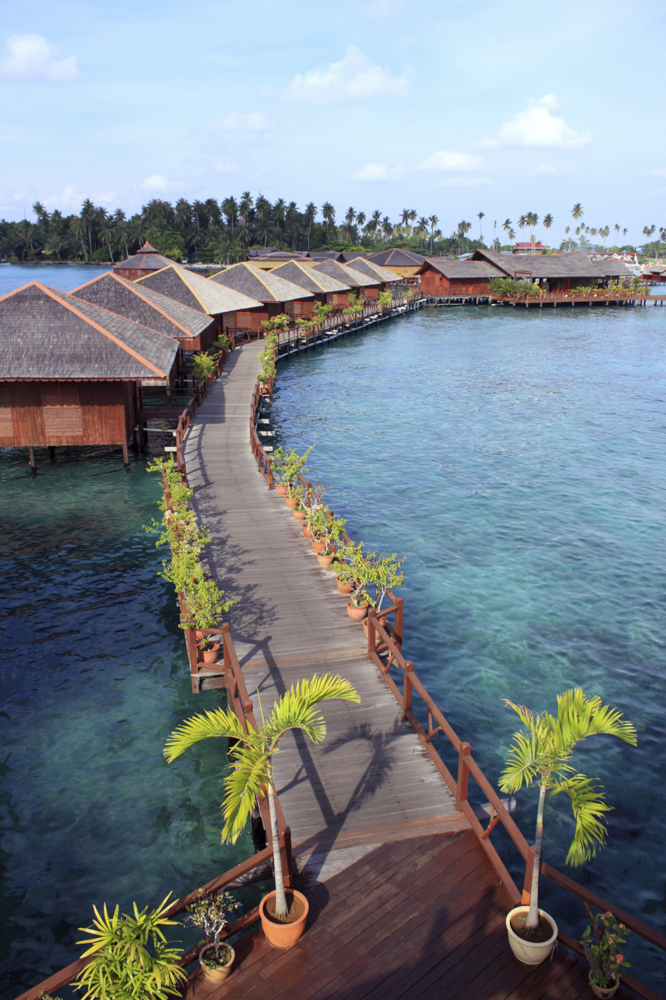
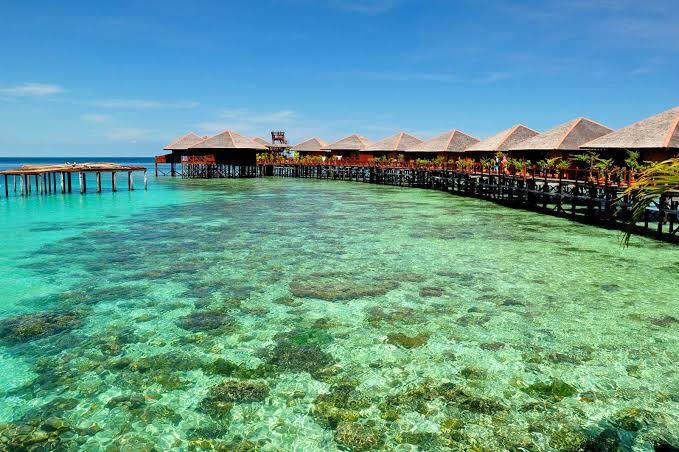
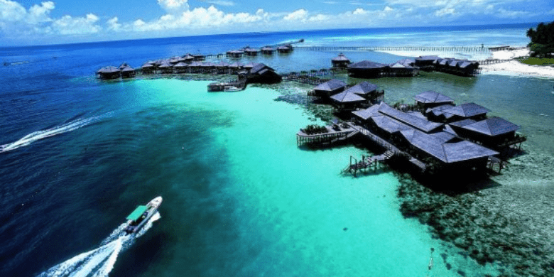

Syurga Muck Diving Dunia
Pulau Mabul terletak 15 minit perjalanan bot dari Pulau Sipadan, Semporna. Pulau ini terkenal di seluruh dunia sebagai lokasi terbaik untuk aktiviti "Muck Diving" iaitu menyelam untuk melihat hidupan laut mikro yang unik.
Berbeza dengan Sipadan yang ada terumbu karang, Mabul adalah pulau pasir dengan dasar laut berlumpur. Di sinilah anda boleh jumpa kuda laut kerdil, sotong, udang mantis, dan pelbagai makhluk laut pelik yang tidak ada di tempat lain.

1. Muck Diving: Syurga untuk jurugambar bawah air. Cari makhluk laut mikro.
2. Snorkeling: Air cetek di sekitar resort sangat jernih dan penuh ikan.
3. Day Trip ke Sipadan: Kebanyakan resort Mabul ada pakej ke Sipadan.
4. Sunset Cruise: Nikmati matahari terbenam dengan latar Pulau Sipadan.
5. Lawatan Kampung Bajau Laut: Kenali budaya masyarakat atas air.
Di Mabul tiada penduduk tetap. Semua penginapan adalah resort.
1. Resort Atas Air: Mewah, ada kolam, restoran. Harga RM800 - RM2000/malam
2. Water Bungalow: Bajet sederhana, terus ke laut. RM400 - RM800/malam
Semua pakej biasanya termasuk 3 kali makan dan 2-3 kali dive sehari.


